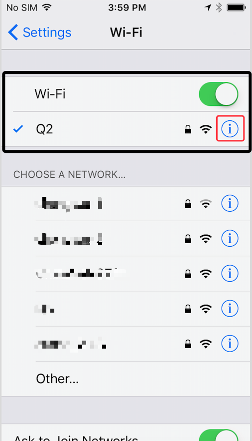

How to set network proxy for XSocks iOS
We open the set WiFi column, open the right side of the exclamation point set button.
Find the following HTTP proxy settings, set it to automatic, and fill in the following proxy address
http://127.0.0.1:8090/proxy.pac
At this point, we have set up, you can enjoy the use of XSocks.